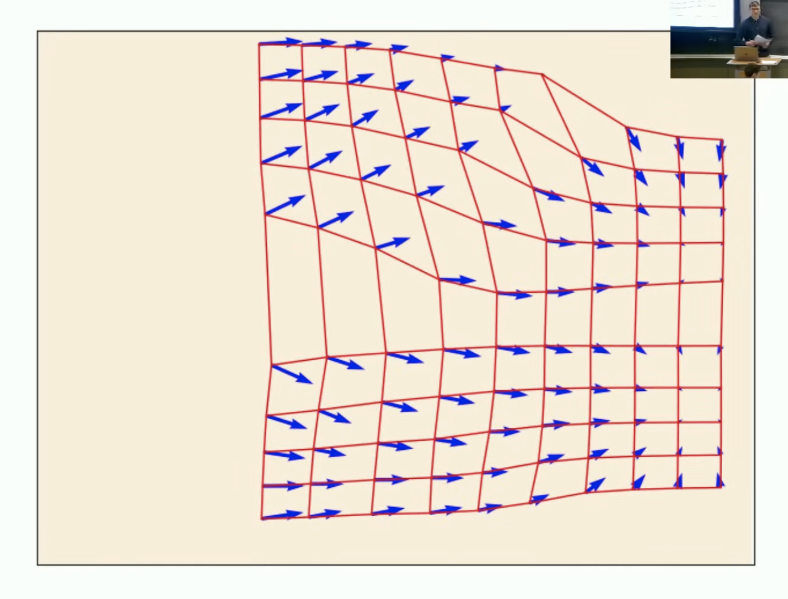
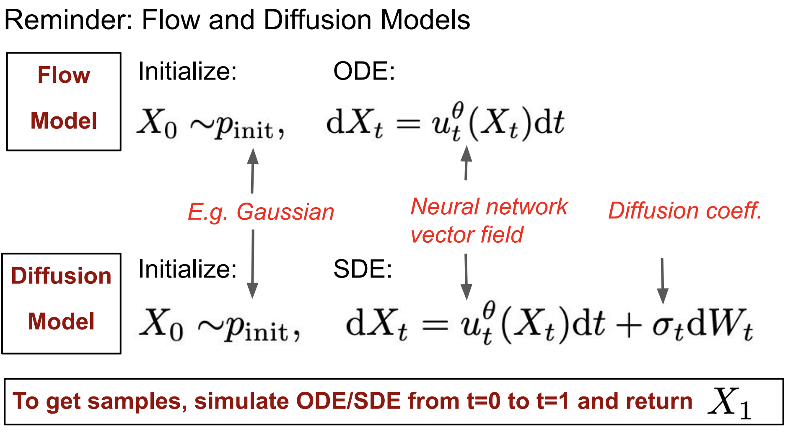
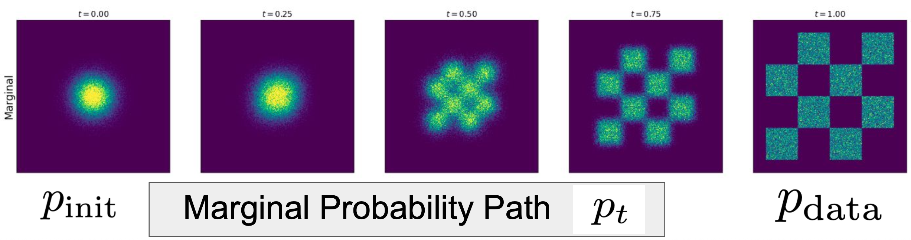
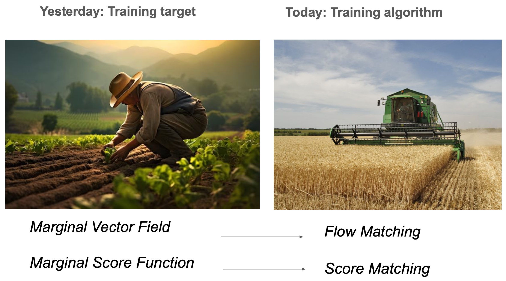

流匹配 和 扩散模型
MIT 6.S184
这门课：Flow/Diffusion模型的理论与实践
- 理论：第一性原理，必要而最少量的数学知识 ODE、SDE
- 实践：如何实现
第零章 学习资源
https://diffusion.csail.mit.edu/
网站包括幻灯片，以及三个实验，以及课堂笔记。
第一章 利用随机微分方程的Gen AI
第一节：从生成到采样
我们将图像/视频/蛋白质表示为向量
$z_{图像}\in R^{H \times R \times 3} $
，，（N个原子有3坐标）。
一张图像的“好”程度 ≈ 它在数据分布下的可能性有多高
学术一点的说法：图像的质量可以近似等同于它在数据分布中的似然性
生成就是从数据分布中采样
数据分布一般用概率密度函数$p_{data}$表示。
数据集包含了数据分布中有限个数的样本：$z_1,...,z_N \sim p_{data}$
条件生成指的是从条件分布中采样：$z \sim p_{data}(\cdot \mid y)$，比如 $y$ 是提示词。意味着给定这个提示，数据的分布是什么。这是我们最感兴趣的课题。
生成模型将初始分布（例如高斯分布）中的样本转换为数据分布中的样本。
$x \sim p_{init}$
➡️ ➡️
第二节 流模型与扩散模型
$z_{视频}\in R^{T \times H \times R \times 3} $$z_{分子结构}\in R^{N \times 3} $$Generative Model$$z \sim p_{data}$
2.1 流模型
2.1.1 基本术语和概念
流的基本对象：轨迹（Trajectory）、向量场（Vector Field）、常微分方程（ODE）
1. 轨迹：$X: [0, 1] \to \mathbb{R}^d, \quad t \mapsto X_t$
[!NOTE]
$\to$ 表示函数的定义域和值域之间的映射关系；
$\mapsto$ 表示具体给定一个元素映射到另一个元素；
轨迹终点 $X_1$ 落在真实数据分布上。
2. 向量场：$u: \mathbb{R}^d \times [0,1] \to \mathbb{R}^d, \quad (x, t) \mapsto u_t(x)$
[!NOTE]
笛卡尔积在这里的作用是“构造一个联合空间”，就像编程里写def f(x: Vector, t: float)-> Vector:，数学中我们不能写两个参数名，所以就把它们打包成一个二元组 $(x, t)$，而这个“打包”的空间就是 $\mathbb{R}^d \times [0,1]$。
3. 常微分方程：描述轨迹上的条件
$X_0 = x_0 \;(初始条件)$ 沿着向量场指定的方向前进。
$\frac{d}{dt}X_t = u_t(X_t)$ （ODE）
轨迹的导数或速度 是由 $X_t$ 当前所在位置的向量 $u_t(X_t)$ 给出的。
[!TIP]
也许我们中的一些人听说过ODE在工程和物理学中是力学的基础。但“流”这个术语不太常见。流是遵循ODE的轨迹的集合。
本质上是我们收集大量针对不同初始条件的解决方案，然后将它们全部收集到一个函数中，并称之为流。
4. 流：$\psi: \mathbb{R}^d \times [0,1] \to \mathbb{R}^d, \quad (x_0, t) \mapsto \psi_t(x_0)$
流 $\psi$是所有不同起点 $x_0$ 的轨迹集合，即整个系统的“流动结构”。
我们希望对于每个初始条件$x_0$，轨迹$\psi_t(x_0)$都是下面这个ODE的解：
$\psi_0(x_0) = x_0$
$\frac{d}{dt}\psi_t(x_0) = u_t(\psi_t(x_0))$
所以：
- ODE由向量场（VF）定义。
- 轨迹是ODE的解。
- 流则是各种初始条件的轨迹的集合。

图示红色网格是轨迹，蓝色箭头是向量场。
2.1.2 定理
ODEs 解的存在性与唯一性定理
定理（皮卡–林德勒夫定理）：
如果向量场 $u_t(x)$ 是连续可微的，且其导数有界，那么下面这个常微分方程（ODE）：$X_0 = x_0\:, \quad \frac{d}{dt}X_t = u_t(X_t)$
存在唯一解。换句话说，流映射是存在的。更一般地说，只要向量场是 Lipschitz 连续的，结论仍然成立。
Lipschitz 连续是一种比连续更强，比可微略弱的函数光滑性条件，在分析和微分方程中非常重要。
[!TIP]
在机器学习实际应用中，常微分方程（ODE）或流（flow）的问题通常都存在唯一解。
你上过的大多数课程中，这已经被隐式假设了。
2.1.3 示例：线性ODE
Flow-based 模型是在学习一个确定性的（deterministic）向量场，间接决定轨迹。轨迹由向量场通过常微分方程生成。
简单的线性向量场：$u_t(x) = -\theta x \; (\theta > 0)$
断言：流由下式给出：$\Psi_t(x_0) = e^{-\theta t} x_0$
- 断言（Claim）在数学中表示一个待证明的断言、结论或命题。
- $\psi$ 发音为 /saɪ/ 或 /psaɪ/
证明：
- 初始条件：
$\Psi_t(x_0) = e^{0} x_0 = x_0$
- ODE：
$\frac{d}{dt}\Psi_t(x_0) = \frac{d}{dt}(e^{-\theta t} x_0) = -\theta e^{-\theta t}x_0 = -\theta \psi_t(x_0) = u_t(\psi_t(x_0))$
不同初始条件的轨迹：
$y$
轴表示初始条件。轨迹呈指数级趋近于零。

2.1.4 ODE数值模拟——欧拉法
不幸的是，在大多数情况，这并不容易，你不能只是手动找到ODE的解。
我们需要做的是模拟它。
算法1：欧拉法模拟ODE
输入：向量场$u_t$，初始条件$x_0$，步数$n$
-
设 $t = 0$
-
设步长 $h = \frac{1}{n}$
-
设 $X_0 = x_0$
-
对 $i = 1, \cdots, n-1$ 循环：
$X_{t+h} = X_t + hu_t(X_t)$
更新$t$为$t+h$
-
结束循环
-
返回轨迹：$X_0, X_h, X_{2h}, \cdots, X_1$
[!TIP]
这是sampling的算法（生成的过程），比较简单。困难的是$u_t^\theta$训练的部分。
2.1.5 生成模型
-
流模型：$p_{init} \xrightarrow{\text{ODE}} p_{data}$
-
神经网络：将向量场变成一个神经网络。
$u_t^\theta : \mathbb{R}^d \times [0, 1] \to \mathbb{R}^d$，$\theta$ 是网络参数
- 随机初始条件：由于ODE是确定性的，所以还不能生成整个分布。但我们可以使初始条件随机化。
$X_0 \sim p_{init}$
- 常微分方程：
$\frac{d}{dt}X_t = u_t^\theta(X_t)$
- 目标：
$X_1 \sim p_{data}$


后面我们会学到，这幅图描述就是用高斯概率路径的边际向量场进行基于欧拉法的ODE数值模拟。

2.2 扩散模型
扩散模型本质上扩展了我们刚才讨论过的想法，但采用随机微分方程。
2.2.1 基本术语和概念
扩散模型的基本对象：随机过程（Stochastic process）、向量场（Vector Field）、常微分方程（ODE）
1. 随机过程：扩散模型的解是随机的轨迹，也称为随机过程。
$X_t, \; (0 \le t \le 1)$
是随机变量
$X: [0, 1] \to \mathbb{R}^d, \quad t \mapsto X_t$
，但此时可以从中抽取样本，所以本身是随机的。这些轨迹的集合更像是它们发生的可能性。
2. 向量场：$u: \mathbb{R}^d \times [0,1] \to \mathbb{R}^d, \quad (x, t) \mapsto u_t(x)$
3. 扩散系数：$\sigma: [0,1] \to \mathbb{R}_{\ge 0}, \quad t \mapsto \sigma_t$，由它向ODE注入随机性。
$X$$X$
3. 随机微分方程：
$X_0 = x_0 \;(初始条件)$
$dX_t = \underbrace{u_t(X_t)dt}_{\text{ODE}} + \underbrace{\sigma_tdW_t}_{stochastic/noise}$ （SDE）
表示： $X_t$ 随时间演化，它的变化由两个部分组成：
- 确定性部分：它会朝着一个“向量场”或“趋势” $u_t(X_t)$ 的方向走（ODE）。
- 随机部分：它还会叠加一些“不可预测的扰动”——这些扰动由布朗运动 $dW_t$ 产生，并通过一个缩放因子 $\sigma_t$ 控制其强度。
$W_t$
表示布朗运动，在数学中通常被建模为一个 Wiener 过程（维纳过程）。
4. 布朗运动：
随机过程：$W： (W_t)_{t \ge 0}$，$W_t \in \mathbb{R}^d$，可以是任何维度的
- 初始化为0：$W_0 = 0$
- 高斯增量：$W_t - W_s\sim \mathcal{N}(0, (t-s)I_d), \;(0\le s\le t)$
- 独立的增量：$W_{t_1} - W_{t_0}, \cdots, W_{t_n} - W_{t_{n-1}}$，$0 \le t_0 \lt t_1 \lt \cdots \lt t_n$ 都是互相独立的，视为随机变量
这个独特属性，使得它在任何地方都不可微。
但我们在研究依赖于求导的微分方程。
5. 符号$dX_t$：
由于维纳过程不可微，我们换种表达：
$\frac{d}{dt}X_t = u_t(X_t)$
$ \Leftrightarrow \quad \lim_{h \to 0} \frac{X_{t+h} - X_t}{h} = u_t(X_t)$
$ \Leftrightarrow \quad \frac{X_{t+h} - X_t}{h} = u_t(X_t) + R_t(h)$
$ \Leftrightarrow \quad X_{t+h} = X_t + hu_t(X_t) + hR_t(h)$
这里 $R_t(h)$ 是误差项，且 $\lim_{h \to 0} R_t(h) = 0$。这儿想作是泰勒近似。
$dX_t = u_t(X_t)dt + \sigma_tdW_t$
$ \Leftrightarrow \quad X_{t+h} = X_t + hu_t(X_t) + \sigma_t(W_{t+h} - W_t) +hR_t(h)$
| ODE |
SDE |
| 解是轨迹 |
解是随机过程，或说随机轨迹 |
| 由向量场定义。 |
由向量场 和 扩散系数 定义。 |
2.2.2 定理
SDEs 解的存在性与唯一性定理
如果向量场 $u_t(x)$ 是连续可微的，且其导数有界，并且扩散系数是连续的，那么下面这个随机微分方程
$X_0 = x_0, \quad dX_t = u_t(X_t)dt + \sigma_tdW_t$
存在唯一解。
2.2.3 SDE数值模拟——欧拉-丸山法
算法2：从一个SDE采样（欧拉-丸山法，Euler-Maruyama method）
输入：向量场$u_t$，步数$n$，扩散系数$\sigma_t$
-
设 $t = 0$
-
设步长 $h = \frac{1}{n}$
-
设 $X_0 = x_0$
-
对 $i = 1, \cdots, n-1$ 循环：
从标准 $d$-维正态分布中采样 $\epsilon \sim \mathcal{N}(0, I_d)$
$X_{t+h} = X_t + hu_t(X_t) + \sigma_t \sqrt{h}\epsilon$
[!NOTE]
$\sqrt{h}\epsilon\sim \mathcal{N}(0, hI_d)$，噪声的方差为$h$。
更新$t$为$t+h$
-
结束循环
-
返回轨迹：$X_0, X_h, X_{2h}, \cdots, X_1$
2.2.4 示例：奥-乌过程
Ornstein–Uhlenbeck (OU) 过程是一个均值回复型的随机过程，是布朗运动（随机游走）的扩展。它经常用来建模那些会在长期内回到某个平衡值附近波动的系统。
$dX_t = -\theta X_t dt + \sigma dW_t$

2.2.5 生成模型
-
扩散模型：$p_{init} \xrightarrow{\text{SDE}} p_{data}$
-
神经网络：是向量场，此处和流模型一样。
$u_t^\theta : \mathbb{R}^d \times [0, 1] \to \mathbb{R}^d$，$\theta$ 是网络参数
- 扩散系数：
$\sigma_t$
（大多数情况下它是固定的）
- 随机初始条件：
$X_0 \sim p_{init}$
- 常微分方程：
$dX_t = u_t^\theta(X_t)dt + \sigma_tdW_t$
- 目标：
$X_1 \sim p_{data}$
第二章 构建训练目标
回顾：

第一节 训练模型
不经过训练，模型的产出“毫无意义” → 我们需要训练向量场 $u_t$
训练 = 找到一组参数，使得：
$\underbrace{X_0 \sim p_{init}}_{\text{从一个初始分布开始，}}$
， 能得到
在回归或分类任务中，训练目标是标签。
但在这里：没有标签 : (
我们必须推导出一个训练目标。
第二节 构建训练目标
目的：推导一个用于训练我们模型的训练目标的公式。
这一节的课程将是技术上最具挑战性的一节！接下来的课程会轻松很多很多。
你不必理解推导过程，但一定要理解以下公式：
$\underbrace{dX_t = u_t^\theta(X_t)dt}_{\text{沿着向量场进行演化，}}$$\underbrace{X_1 \sim p_{data}}_{\text{最终点的分布 = 数据分布}}$

三个条件对象，三个边际对象的公式：
- 条件和边际的概率路径
- 条件和边际的向量场
- 条件和边际的得分函数
2.1 条件和边际概率路径
2.1.1 关键术语
- “Conditional” = “针对单个数据点”
- “Marginal” = “跨数据点分布”
Conditional（条件的） 强调的是在某个特定数据点条件下的情况。
Marginal（边际的） 是指考虑整个数据的整体分布，不针对单点。
:mag: “边际”
2.1.2 概率路径
概率路径： 从噪声到数据的路径。（噪声和数据的逐步插值）
狄拉克分布（ Dirac distribution）：$z \in \mathbb{R}^d$, $\delta_z: X \sim \delta_z \Rightarrow X = z$
这是最简单的一种分布。它是一种确定性分布（deterministic distribution）：它在 $x = z$ 处“无限高”，在 $x \ne z$ 的地方为 0，积分为 1。
你可以把它看成一个“浓缩在一个点 $z$ 上的概率分布”，所有质量都集中在 $z$，没有任何扩散或随机性。从 狄拉克分布中采样的结果就是 $z$ 本身，毫无随机性。
[!TIP]
一开始，大家尝试寻找“从噪声变成数据”的最优路径，比如在纯粹的神经常微分方程（neural ODEs）^[1]^ 中，是不去指定中间过程（即路径上的中间分布）的，人们只是希望模型自己找到一条最佳路径。但扩散模型的一个关键思想，就是明确地指定从噪声到数据的演化路径。
而实际上，扩散模型这样 选择一种路径并坚持使用，是完全可行的——因为这样可以带来可扩展的训练流程。
[1] Chen, Ricky TQ, et al. "Neural ordinary differential equations." Advances in neural information processing systems 31 (2018).
2.1.3 条件概率路径 $p_t(\cdot \mid z)$
条件概率路径：$p_t(\cdot \mid z)$
- $p_t(\cdot \mid z)$ 是$\mathbb{R}^d$上的概率分布
- $p_0(\cdot \mid z) = p_{init}$
- $p_1(\cdot \mid z) = \delta_z$
2.1.4 例子 —— 高斯概率路径
$p_t(\cdot \mid z) = N(\alpha_t z, \beta_t^2 I_d)$
$\alpha_t$
和 是所谓的噪声调度器（noise schedulers）
$\beta_t$
- $\alpha_0 = 0$，$\alpha_1 = 1$
- $\beta_0 = 1$，$\beta_1 = 0$
- 比如常见可以设计为 $\alpha_t = t$，$\beta_t = 1 - t$
容易得到，它满足条件概率路径 $p_t(\cdot \mid z)$的三点要求。
如下图可视化：

2.1.5 边际概率路径 $p_t$
边际概率路径：$p_t$
$z \sim p_{data}, \; x \sim p_t(\cdot \mid z) \Rightarrow \underbrace{x \sim p_t}_{\text{forget z}}$
通过条件概率路径 + 数据分布 可以推出 边际概率路径。即：
流模型中时刻 $t$ 的边际分布是对所有初始数据 $z$ 的条件分布 $p_t(X \mid z)$ 的加权平均，权重由初始数据的分布 $p_{\text{data}}(z)$ 决定。
- $p_t(X) = \int p_t(x|z)p_{data}(z)dz$
- $p_0 = p_{init}$
- $p_1 = p_{data}$
如下图可视化：

2.1.6 概率路径小结
条件概率路径 $p_t(\cdot \mid z)$，由 $p_{init}$ 和 一个数据点 $z$ 插值，例子是高斯概率路径$N(\alpha_t z, \beta_t^2 I_d)$，$\alpha_t$从0到1，$\beta_t$从1到0。
边缘化得到
边际概率路径$p_t$，由 $p_{init}$ 和 $p_{data}$ 插值，有公式 $p_t(x) = \int p_t(x| z)p_{data}(z)dz$。
[!NOTE]
公式 $p_t(X) = \int p_t(x|z)p_{data}(z)dz$
把 $z$ 给“边缘化掉”了（marginalized out）——所以叫它“边际分布”。
在概率论中，“边际”这个词来自于一个常见的操作 —— 从联合分布或条件分布中通过积分“边缘化掉”一些变量，只保留我们关心的部分。
| 条件概率 $p(x \mid z)$ | 给定 $z$，$x$ 的分布 | 先挑定一个初始点，观察它的演化路径 |
| 联合概率 $p(x, z)$ | $x$ 和 $z$ 同时出现的概率 | 所有起点与终点对的联合分布 |
| 边际概率 $p(x)$ | 不关心 $z$ 时，$x$ 的总体分布 | 所有起点演化后的“总体效果” |
| 术语 | 含义 | 举例 |
| ---------------------- | ----------------------------- | ---------------------------------- |
[!TIP]
“边际”这个词来自表格“边缘”的历史传统，而不是因为它本身有什么边的含义。从语义角度来说确实不够直观，但它已经成为标准术语。你记住“边际 = 去掉另一个变量后，留下的总概率”就可以了。
| 性别 / 吸烟 |
吸烟 (Yes) |
不吸烟 (No) |
总计（边缘） |
| 男 (Male) |
30/100 = 0.30 |
20/100 = 0.20 |
0.50 |
| 女 (Female) |
10/100 = 0.10 |
40/100 = 0.40 |
0.50 |
| 总计 |
0.40 |
0.60 |
1.00 |
如果你觉得难记，大可以在心里把它当作“总分布”或“全局分布”来理解，也没问题 。
2.2 条件和边际向量场
2.2.1 条件向量场
[!NOTE]
我们希望有一个ODE，能沿着条件概率路径，从噪声到单个数据点，即 $p_{init} \overset{\text{$p_t(\cdot \mid z)$}}{\underset{\text{ODE}}{\longrightarrow}} \delta_z$
形式化（公式化）表达：
$u_t^{target}(x|z)$
，（ ）
满足
$X_0 \sim p_{init},\quad \frac{d}{dt}X_t = u_t^{target}(x_t|z) \Rightarrow X_t \sim p_t(\cdot \mid z)$ $(0 \le t \le 1)$
2.2.2 例子——条件高斯向量场
$u_t^{target}(x|z) = (\dot{\alpha_t} - \frac{\dot{\beta_t}}{\beta_t}\alpha_t)z+ \frac{\dot{\beta_t}}{\beta_t}x$
，
- $\dot{}$ 在物理中常用于表示时间导数，如速度$\dot{x}$，所以 $\dot{\alpha_t}=\frac{d}{dt}\alpha_t$
- 这个向量场很简单，就是 $x$ 和 $z$ 的某种加权组合。
这个向量场能沿着高斯概率路径 $p_t(\cdot \mid z) = N(\alpha_t z, \beta_t^2 I_d)$ 从噪声到数据点。
可视化为下图：


2.2.3 边际向量场 & 定理（边缘化技巧）
边际向量场：
$u_t^{target}(x) = \int u_t^{target}(x|z) \frac{p_t(x|z)p_{data}(z)}{p_t(x)}dz$
$\substack{0 \le t \le 1 \\ x,z \in \mathbb{R}^d}$
$\frac{p_t(x|z)p_{data}(z)}{p_t(x)}$
这个比率，本质上是给定，采用的后验概率，即。
[!IMPORTANT]
这儿要理解一下，边际概率路径是条件概率路径按 $p(z)$ 加权，描述数据在（$t$时刻）空间中的整体分布，反映“在哪儿”更可能出现。
向量场描述“怎么走”的方向和速度，是动态且带方向性的。由于当前位置 $x$ 下不同初始条件导致的向量场差异较大，向量场需按后验概率 $p(z \mid x)$ 加权，才能准确反映当前点的运动趋势。
这样的边际向量场
满足
$X_0 \sim p_{init}, \quad \frac{d}{dt}X_t = u_t^{target}(x_t) \Rightarrow X_t \sim p_t \quad (0 \le t \le 1)$ $ \Rightarrow X_1 \sim p_{data}$
[!TIP]
回顾这些边际对象的公式，可以看到研究 条件对象 只是工具，都是为了构建 边际对象 的公式。
$第一行 \xrightarrow{ 边缘化 }第二行$
：

2.2.4 连续性方程（延伸知识，用于证明边际向量场的边缘化）
给定：$X_0 \sim p_{init}, \quad \frac{d}{dt}X_t = u_t(X_t)$
沿着概率路径 $X_t \sim p_t \quad (0 \le t \le 1)$ （边际是$p_t$）
$x$$z$$p_t(z|x)$
等价于说：
连续性方程 $\frac{d}{dt}p_t(x) = -div(p_tu_t)(x)$ 成立。（该PDE成立）
$p_t$
在处的时间导数 是由 （）的负散度给出的。
[!NOTE]
可以理解为 概率密度的变化，取决于该点的负的净流出量。（散度衡量的是净流出量 。用于描述 流体是否在某处发散或聚集，正散度表示发散，负散度表示汇聚。）。
换句话说， 流出越多，密度下降越快。

[!CAUTION]
向量场的散度是描述流体“是否在某处发散或聚集”；
散度：$\operatorname{div}(v_t)(x) = \sum_{i=1}^d \frac{\partial (v_t)_i(x)}{\partial x_i}$
$x$$p_t u_t$$流量=浓度\times速度$
而KL散度是描述两个分布“偏离有多大”。从数学形式和语义来看，它们是两个完全不同的工具。
仅仅因为字面的 “偏离/发散” 符合描述，而使用了相同的术语词汇。
证明：
$\frac{d}{dt}p_t(x) = \frac{d}{dt}\int p_t(x|z)p_{data}(z)dz = \int \frac{d}{dt}p_t(x|z)p_{data}(z)dz $
$= \int -div(p_t(\cdot\mid z)u_t^{target}(\cdot\mid z))(x)p_{data}(z)dz$
$= -div(\int p_t(x\mid z)u_t^{target}(x\mid z)p_{data}(z))dz$
$= -div(p_t(x)\int u_t^{target}(x\mid z)\frac{p_t(x\mid z) p_{data}(z)}{p_t(x)})dz$
$= -div(p_t u_t^{target})(x)$
[!TIP]
其实就是利用连续方程：
$\frac{d}{dt}p_t(x|z) = -div(p_t(\cdot|z)u_t^{target}(\cdot|z))(x)$
$\frac{d}{dt}p_t(x) = -div(p_tu_t)(x)$
的定义
，在推导过程中，得到的$u_t^{target}(x) = \int u_t^{target}(x|z) \frac{p_t(x|z)p_{data}(z)}{p_t(x)}dz$
2.2.5 向量场小结
条件向量场 $u_t^{target}(x \mid z)$，其ODE沿着条件路径，例子是条件高斯向量场$(\dot{\alpha_t} - \frac{\dot{\beta_t}}{\beta_t}\alpha_t)z+ \frac{\dot{\beta_t}}{\beta_t}x$
边缘化得到
边际向量场$u_t^{target}(x)$，其ODE沿着边际路径，有公式 $u_t^{target}(x) = \int u_t^{target}(x|z) \frac{p_t(x|z)p_{data}(z)}{p_t(x)}dz$
2.3 条件和边际得分函数（扩散模型）
2.3.1 条件和边际得分
条件得分：
$\nabla_x \log p_t(x|z)$，即条件概率路径的对数似然的梯度
边际得分：
$\nabla \log p_t(x)$，即边际概率路径的对数似然的梯度
公式：根据链式法则
$\nabla \log p_t(x) = \frac{\nabla p_t(x)}{p_t(x)} = \frac{\nabla \int p_t(x|z)p_{data}(z)dz}{p_t(x)}$
$= \frac{ \int \nabla p_t(x|z)p_{data}(z)dz}{p_t(x)} = \int \nabla \log p_t(x|z) \frac{ p_t(x|z)p_{data}(z)}{p_t(x)}dz$，发现又是构造出后验概率加权积分的形式。
$\because \nabla \log p_t(x|z) = \frac{\nabla p_t(x|z)}{p_t(x|z)}$
2.3.2 例子——高斯得分
一个高斯概率路径对应的高斯得分：
$\nabla_x \log p_t(x|z) = -\frac{x - \alpha_t z}{\beta_t^2}$
由正太分布的概率密度函数
$p(x) = \frac{1}{(2\pi)^{d/2} |\Sigma|^{1/2}} \exp\left( -\frac{1}{2}(x - \mu)^\top \Sigma^{-1} (x - \mu) \right)$
代入 $\boldsymbol{\Sigma} = \beta_t^2 \mathbf{I}$
$p(\mathbf{x}) = \frac{1}{(2\pi \beta_t^2)^{d/2}} \exp\left( -\frac{1}{2\beta_t^2} \left\| \mathbf{x} - \alpha_t \mathbf{z} \right\|^2 \right)$
推导得到。
2.3.3 定理（SDE扩展的技巧）
对于任意$\sigma_t \ge 0$，
$X_0 \sim p_{init}, \quad dX_t = [u_t^{target}(X_t) + \frac{\sigma_t^2}{2}\textcolor{blue}{\nabla \log p_t(x_t)}]dt + \sigma_tdW_t$
[!NOTE]
得分函数 本质上就是 我们需要应用的校正项。
得分函数校正了“随机扩散轨迹”的方向，让它向数据靠近。
$ \Rightarrow X_t \sim p_t \quad (0 \le t \le 1) \Rightarrow X_1 \sim p_{data}$
:mag: 流模型 其实就能达到这个目标，所以现在50%的模型都纯流模型。所以我们优先掌握流模型，扩散模型只是其扩展。
流模型是基础。 扩散模型更多像一种实践经验，在流模型基础上，通过实验发现加各种扩散系数的噪声，生成效果是否会改善。
2.4 总结
后续课程会学习到：
模型训练 就是 训练 $u_t^{target}$ 这个对象，或$\nabla \log p_t(x)$这个对象。
第三章 训练流模型和扩散模型
回顾：


[!NOTE]
知识小灶：
像修一条高速公路。你得明确规划每个路口（映射函数），并且每段必须符合标准设计（可逆、结构简单、Jacobian 可计算）。
- 流匹配：学导数（vector field）
像使用GPS。你不关心路具体长什么样，只要告诉我每个时刻往哪个方向走（向量场），然后用 ODE 把路径积分出来，就能从出发点走到终点。
3.1 训练算法
我们将 边际向量场、边际得分函数 转化为 两种算法：流匹配 与 得分匹配。
这将是训练算法，用于学习这两个对象。

3.2 流匹配
$u_t^\theta$
(: parameters)
目标
$u_t^\theta \approx u_t^{target}$
3.2.1 流匹配损失
$L_{fm} (\theta)= \mathbb{E}[\left \| u_t^\theta(x) - u_t^{target}(x)\right \|^2 ]$，
✓ Minimizer ✗ Tractable
为什么不易处理呢？ 因为我们无法评估这一点，边际向量场是一个（边缘化）积分，批量进行计算很困难。
$t \sim \mathcal{U}(0, 1)$
， 在 区间均匀采样。
$z \sim p_{data}$
， 通过dataloader从数据集中随机采样。
$x \sim p_t(\cdot \mid z)$
， 从条件概率路径采样。
[!NOTE]
这里流匹配损失函数很直观，就是两个对象之间的均方误差。取期望值就是在所有采样样本$(x, t)$上做torch.mean，这是平时实现损失函数常用的。
$\theta$$t$$[0, 1]$$z$$x$
3.2.2 条件流匹配损失
$L_{cfm} (\theta)= \mathbb{E}[\left \| u_t^\theta(x) - u_t^{target}(x \mid z)\right \|^2 ]$，
? Minimizer ✓ Tractable
最小化这个对象是否有意义？因为条件向量场不是真的有用，我们不想生成单个数据点，而是想生成整个数据分布。
但接下来我们会证明，最小化条件流匹配损失，能够达到我们的目标。
$t \sim \mathcal{U}(0, 1)$
，，
$L_{fm}(\theta) = L_{cfm}(\theta) + C$ ，for $C \lt 0$ independent of $\theta$
[!TIP]
$C$ 是与$\theta$无关的常数，不会影响梯度下降方向。从 优化角度来看，优化 $L_{cfm}(\theta)$ 与优化 $L_{fm}(\theta)$ 是等价的

$\theta$
的值不重要，我们不关心神经网络具体参数值什么，重要的是最小化器（Minimizer），我们记为 。
$\Rightarrow$
① 对于 的最小化器 ：
$z \sim p_{data}$$x \sim p_t(\cdot \mid z)$$\theta^*$$L_{cfm}$$\theta^*$$u_t^{\theta^*} = u_t^{target}$
$\Rightarrow$
②
$\Rightarrow$ SGD（随机梯度下降）是相同的。
3.2.4 算法（通用）
算法3：流匹配训练过程（通用）
输入：一个样本 $z \sim p_{data}$ 数据集，神经网络 $u_t^{\theta}$
对每个最小批次（mini-batch）的数据循环：
采样$z \sim p_{data}$
采样$t \sim \mathcal{Unif}_{[0, 1]}$
采样 $x \sim p_t(\cdot \mid z)$
计算损失 $L (\theta)= \left \| u_t^\theta(x) - u_t^{target}(x \mid z)\right \|^2$
（选择一种优化器）梯度下降更新模型参数
循环结束
[!NOTE]
- 流和扩散模型的强大之处就在于只需要最小化简单的均方误差。例如，GANs会有一个最小最大优化程序，比这复杂得多。
- 这儿条件概率路径 $p_t(\cdot \mid z)$、条件向量场$u_t^{target}(x \mid z)$ 如上节课讲的，是我们选择的一组，它可以完成我们想要的工作。这是一个设计选择，也有很多其他选择，接下来的课程我们实际上会看到一组新的选择。
3.2.5 例子——高斯概率路径的$L_{cfm}$
$\nabla_\theta L_{cfm}(\theta) = \nabla_\theta L_{fm}(\theta)$
回顾：
$p_t(\cdot \mid z) = N(\alpha_t z, \beta_t^2 I_d)$
，
$u_t^{target}(x|z) = (\dot{\alpha_t} - \frac{\dot{\beta_t}}{\beta_t}\alpha_t)z+ \frac{\dot{\beta_t}}{\beta_t}x$
继续推：
$\varepsilon\sim \mathcal{N}(0, I_d) \Rightarrow \alpha_tz + \beta_t\varepsilon \overset{\text{define}}{=} x \sim p_t(\cdot \mid z)$
$\Rightarrow$
$L_{cfm} (\theta)= \mathbb{E}[\left \| u_t^\theta(x) - (\dot{\alpha_t} - \frac{\dot{\beta_t}}{\beta_t}\alpha_t)z - \frac{\dot{\beta_t}}{\beta_t}x \right \|^2 ]$
$t \sim \mathcal{U}(0, 1)$，$z \sim p_{data}$，$x\sim \mathcal{N}(\alpha_t z, \beta_t^2 I_d)$
代入 $x = \alpha_tz + \beta_t\varepsilon$ 再做些代数：
$= \mathbb{E}[\left \| u_t^\theta(\alpha_tz + \beta_t\varepsilon) - (\dot{\alpha_t} - \frac{\dot{\beta_t}}{\beta_t}\alpha_t)z - \frac{\dot{\beta_t}}{\beta_t}(\alpha_tz + \beta_t\varepsilon) \right \|^2]$
$ = \mathbb{E}[\left \| u_t^\theta(\alpha_tz + \beta_t\varepsilon) - (\dot{\alpha_t}z + \dot{\beta_t}\varepsilon) \right \|^2 ]$
对于指定的条件路径的实例： $\alpha_t = t, \quad \beta_t = 1-t$，
[!TIP]
Cond OT path
选择的 $\alpha_t = t, \quad \beta_t = 1-t$ 这样一条路径有特定的名称，就是所谓的条件最优传输路径（ Conditional Optimal Transport path）。
有：$\dot{\alpha_t} = 1, \dot{\beta_t} = -1$
$\therefore L_{cfm} (\theta)= \mathbb{E}[\left \| u_t^\theta(tz + (1 - t)\varepsilon) - (z -\varepsilon) \right \|^2 ] $
非常简单吧，无法想象一个更简单的训练算法了。

3.2.6 算法（OT）
Flow Matching Training for CondOT path
算法4：流匹配训练过程（最优传输路径）
输入：一个样本 $z \sim p_{data}$ 数据集，神经网络 $u_t^{\theta}$
对每个最小批次（mini-batch）的数据循环：
采样$z \sim p_{data}$
采样$t \sim \mathcal{Unif}_{[0, 1]}$
采样噪声 $\varepsilon \sim \mathcal{N}(0, I_d)$
设 $x = tz + (1-t)\varepsilon$
计算损失 $L (\theta)= \left \| u_t^\theta(x) - (z - \varepsilon)\right \|^2$
（选择一种优化器）梯度下降更新模型参数
循环结束
[!IMPORTANT]
让我们欣赏下该算法的简单：
我们在$z$ 和 $\varepsilon$ 之间的直线上取一个点，我们将其插入神经网络，然后神经网络本质上会学习预测数据和噪声两点之间的差异$z - \epsilon$。
[!TIP]
思考：为了训练更稳定，采样$t$可以随训练进度动态调整，从接近1 → 接近0 的分布。因为$t=0$时只能访问噪声的信息，$t=1$时可以访问完整的数据点。所以随着时间推移，你将需要预测同样的东西，但是拥有的信息是不同的。
物理直觉：
本质上是在预测给定噪声、数据点和路径，在这条路径上的某个地方，你需要预测当前的速度。但在直线路径（OT）中，速度只是一个差值，两点间的向量。
而扩散模型走的是非直线，就像一些所谓的方差保持路径或方差爆炸路径。
这可不是什么奇特的、太简单的算法，MovieGen（Meta）、Stable Diffusion 3（Stability AI）就是用的该算法。
3.2.7 证明
对定理：$L_{fm}(\theta) = L_{cfm}(\theta) + C$ 的证明：
$\left\| a -b \right\|^2 = \left\| a \right\|^2 - 2a^Tb + \left\| b \right\|^2$
,
$L_{fm} (\theta)= \mathbb{E}[\left \| u_t^\theta(x) - u_t^{target}(x)\right \|^2 ] =\mathbb{E}[\left \| u_t^\theta(x) \right\|^2 -2u_t^\theta(x)^Tu_t^{target}(x) + \left \| u_t^{target}(x)\right \|^2 ]$
$L_{cfm} (\theta)= \mathbb{E}[\left \| u_t^\theta(x) - u_t^{target}(x \mid z)\right \|^2 ] =\mathbb{E}[\left \| u_t^\theta(x) \right\|^2 -2u_t^\theta(x)^Tu_t^{target}(x \mid z) + \left \| u_t^{target}(x \mid z)\right \|^2 ]$
$(a,b \in \mathbb{R}^d)$
然后 $\left \| u_t^{target}(x)\right \|^2$ 和 $\left \| u_t^{target}(x \mid z)\right \|^2$ 是和 $\theta$ 无关的常数，可以消掉，$\left \| u_t^\theta(x) \right\|^2$ 项相同，也可以消掉。
转变成了证明 $2u_t^\theta(x)^Tu_t^{target}(x)$ 与 $2u_t^\theta(x)^Tu_t^{target}(x\mid z)$ 的期望相同。 在课堂笔记中，对此进行了详细证明，这儿的点积是线性的，这里就略过了。
3.2.8 采样算法
我们如何从刚刚训练好的流模型中采样（生成对象）呢？
参加算法1 ODE数值模拟——欧拉法
[!TIP]
问：人们是否使用欧拉法？
答：最初是的，但现在人们最想要最小化神经网络的预测次数，也就是数值模拟中有多少步。所以关心效率时，人们通常使用高阶ODE求解器。
- Euler 方法（欧拉法）是最基本的 ODE 数值求解器之一，属于一阶（first-order）ODE solver。
- “higher-order” 指的是方法的收敛阶（order of accuracy），也就是它逼近真实解的速度。
3.3 得分匹配
回顾：
边际得分函数：
$\nabla \log p_t(x) = \int \nabla \log p_t(x|z) \frac{ p_t(x|z)p_{data}(z)}{p_t(x)}dz$，是后验概率加权积分的形式。
定理（SDE扩展的技巧）：
对于任意$\sigma_t \ge 0$，
$X_0 \sim p_{init}, \quad dX_t = [u_t^{target}(X_t) + \frac{\sigma_t^2}{2}\textcolor{blue}{\nabla \log p_t(x_t)}]dt + \sigma_tdW_t$
[!NOTE]
得分函数 本质上就是 我们需要应用的校正项。
得分函数校正了“随机扩散轨迹”的方向，让它向数据靠近。
$ \Rightarrow X_t \sim p_t \quad (0 \le t \le 1) \Rightarrow X_1 \sim p_{data}$
3.3.1 得分匹配损失
得分匹配网络：
$s_t^\theta$
(：parameters )
目标：
$s_t^\theta \approx \nabla \log p_t$
由于边际得分函数和边际向量场的（边缘化）公式非常类似，这儿的推导也是类似的，即将证明：$\mathcal{L}_{sm}(\theta) = \mathcal{L}_{dsm}(\theta) + C$
[!NOTE]
$\theta$
人们习惯将条件得分匹配损失，称作去噪得分匹配损失。实则是一回事。
3.3.2 去噪得分匹配损失
$L_{sm} (\theta)= \mathbb{E}_{t,z,x}[\left \| s_t^\theta(x) - \nabla \log p_t(x) \right \|^2 ]$，
✓ Minimizer ✗ Tractable
$L_{dsm} (\theta)= \mathbb{E}_{t,z,x}[\left \| s_t^\theta(x) - \nabla \log p_t(x \mid z) \right \|^2 ]$，
? Minimizer ✓ Tractable
3.3.3 定理
$\mathcal{L}_{sm}(\theta) = \mathcal{L}_{dsm}(\theta) + C$
，for independent of
$\Rightarrow$
① 对于 的最小化器 ：
$\Rightarrow$
②
$\Rightarrow$ SGD（随机梯度下降）是相同的。
3.3.4 算法（通用）
算法5：得分匹配训练过程（通用）
输入：一个样本 $z \sim p_{data}$ 数据集，得分网络 $s_t^{\theta}$
$C \lt 0$$\theta$$\mathcal{L}_{dsm}$$\theta^*$$s_t^{\theta^*} = \nabla \log p_t(x)$$\nabla_\theta \mathcal{L}_{dsm}(\theta) = \nabla_\theta L_{sm}(\theta)$
对每个最小批次（mini-batch）的数据循环：
采样$z \sim p_{data}$
采样$t \sim \mathcal{U}_{[0, 1]}$
采样 $x \sim p_t(\cdot \mid z)$
计算损失 $\mathcal{L} (\theta)= \left \| s_t^\theta(x) - \nabla \log p_t(x \mid z)\right \|^2$
（选择一种优化器）梯度下降更新模型参数
循环结束
3.3.5 例子——高斯概率路径的$\mathcal{L}_{dsm}$
回顾：
$\nabla_x \log p_t(x|z) = -\frac{x - \alpha_t z}{\beta_t^2}$
$\varepsilon \sim \mathcal{N}(0, I_d) \Rightarrow x = \alpha_t z + \beta_t \varepsilon \sim \mathcal{N}(\alpha_t z, \beta_t^2 I_d)$
继续推：
$\mathcal{L}_{dsm}(\theta) = \mathbb{E}_{t \sim Unif,z \sim p_{data},x \sim p_t(\cdot \mid z)}[\left \| s_t^\theta(x) + \frac{x - \alpha_t z}{\beta_t^2} \right \|^2 ]$
$= \mathbb{E}_{t \sim Unif,z \sim p_{data},x \sim p_t(\cdot \mid z)}[\left \| s_t^\theta(\alpha_t z + \beta_t \varepsilon) + \frac{\varepsilon}{\beta_t} \right \|^2 ]$
[!TIP]
现在你应该理解，为什么它被称为 去噪得分匹配，是因为被发现对于高斯概率路径，我们只是学习预测用于破坏数据点的噪声。
3.3.6 算法（高斯概率路径）
Score Matching Training for Gaussian probability path
算法6：得分匹配训练过程（高斯概率路径）
输入：一个样本 $z \sim p_{data}$ 数据集，得分网络（或称 噪声预测器） $s_t^{\theta}$
输入：Schedulers $\alpha_t$, $\beta_t$ with $\alpha_0 = \beta_1 = 0$, $\alpha_1 = \beta_0 = 1$
对每个最小批次（mini-batch）的数据循环：
采样$z \sim p_{data}$
采样$t \sim \mathcal{Unif}_{[0, 1]}$
采样噪声 $\varepsilon \sim \mathcal{N}(0, I_d)$
设 $x = \alpha_tz + \beta_t \varepsilon$
计算损失 $L (\theta)= \left \| s_t^\theta(x_t) + \frac{\varepsilon}{\beta_t} \right \|^2$
（选择一种优化器）梯度下降更新模型参数
循环结束
[!NOTE]
值得一提的是，对于较小的$\beta_t$，$\frac{\varepsilon}{\beta_t}$在数值上是不稳定的。所以对于$t$接近1时，损失可能不稳定。
扩散模型研发的早期就意识到这点，并且有一些技巧可以解决。在课堂笔记里有介绍。 但得分匹配是在扩散模型之前就提出的，那时人们反对这种匹配具有高方差。
问答：
[!NOTE]
问：我们能否避免同时学习它们（流匹配网络 和 得分匹配网络）？
答：其实我稍后会讲到这个。答案是肯定的。
原则上，对于一般情况，你必须同时学习它们。
但是，在最重要的特定的高斯概率路径，我们可以将它们相互转换。
但即使你必须同时学习它们，请记住，我们可以将它们放在同一个网络中，也就是为一个图像的每个像素制作两个输出，所以它的计算成本不会那么高。
3.3.7 采样算法
扩散模型的随机采样：
我们将训练好的新网络插入到SDE：
$X_0 \sim p_{init}, \quad dX_t = [u_t^{target}(X_t) + \frac{\sigma_t^2}{2}\textcolor{blue}{\nabla \log p_t(x_t)}]dt + \sigma_tdW_t$
$\downarrow$
插入 表示向量场的网络 和 得分网络
$X_0 \sim p_{init}, \quad dX_t = [u_t^{\theta}(X_t) + \frac{\sigma_t^2}{2}s_t^{\theta}(x_t)]dt + \sigma_tdW_t$
经过训练 $\Rightarrow X_t \sim p_t$
3.3.8 去噪扩散模型（DDMs）
术语
去噪扩散模型 = 高斯概率路径$\mathcal{N}(\alpha_t z, \beta_t^2I_d)$（我们的标准例子）的扩散模型
通用术语中 Terminology（by many people）
去噪扩散模型 = 扩散模型
也就是说，许多人提到扩散模型，就是指的这个特定的实例。人们会用不同的方式谈论同一件事。
当和你的同事交谈时，他们会用一种完全不同的语言，不要感到困惑。这并不奇怪，因为算法是通过许多不同的方式发现的。
特殊性质
向量场和得分函数 可以 相互转换。 所以同一个网络即可完成 流匹配 和 得分匹配。
$\because$ 向量场 和 得分函数 都是 $x$ 和 $z$ 的某种加权
$\lambda_1 z + \lambda_2 x$
，
经过代数，就能得出它们能相互转换：

训练后的边际向量场 可以转换为 得分网络，反之亦然。
即，得分是免费获取的。
[!TIP]
所以第一代的扩散模型文章，只讨论 得分匹配。 因为它们隐式地依赖于高斯概率路径的去噪扩散模型。然后可以将东西相互转换。
总结
我们在这里得到一个完整的端到端训练和采样算法。我们有一个通用的模型，可以从数据分布中生成样本。
下周的课程将更加注重应用，我们将讨论针对特定应用可以做出的具体选择：
- 神经网络架构，即$u_t^{\theta}$、$s_t^{\theta}$这些函数具体是什么
$\lambda_1' z + \lambda_2' x$
- 基于提示词的条件
- 图像生成器 或 视频生成器
- 其他应用：机器人技术、蛋白质设计
我们可以将任意分布相互转换，任意的 $p_{init}$ 和 $p_{data}$，所以我们不仅仅是关心去噪扩散模型（DDMs）。因为DDMs总是从某种高斯噪声作为 $p_{init}$ 开始。
但可能还有其他情况，你的初始分布要有趣得多，而且有很多人在探索这一点。
在图像空间、音频空间以及科学领域，许多时候，你的初始分布本身就很有意义，例如：

我觉得可以预测转换域的东西，定义清楚这个转换，是光流？是高频残差？等等。 有意义的输入则作为参考信息。
第四章 构建一个图像生成器
为了避免混乱，本章只以流模型为例，进行介绍。但所讲述的内容都可扩展到扩散模型。
议程：
- 将生成模型框架从 无条件生成 延伸到 有条件生成。
- 开发用于条件采样的无分类器引导（classifier-free guidance）方法。
- 讨论图像生成这一典型案例中的架构选择，并综述当前主流模型。
4.1 条件生成和引导
无条件 也可以 称作 无引导（Unguided）
有条件 也可以 称作 有引导（Guided）

4.1.1 有引导的条件匹配目标函数 $\mathcal{L}_{cfm}^{guided}$
观察：当 $y$ 固定时，我们实际退化为无引导生成：
此时 $y$ 可以理解为 超参数。
$\mathcal{L}_{cfm}^{guided}(\theta ; y) =\mathbb{E}_{\square}[\left \| u_t^\theta(x) - u_t^{target}(x \mid z)\right \|^2 ]$
，
$\square = \textcolor{blue}{z \sim p_{data}(z \mid y)}, t \sim \mathcal{U}[0,1), x \sim p_t(x\mid z)$
观察：当让 $y$ 变化时：
$\mathcal{L}_{cfm}^{guided}(\theta) =\mathbb{E}_{\square}[\left \| u_t^\theta(x) - u_t^{target}(x \mid z)\right \|^2 ]$
，
$\square = \textcolor{red}{(z, y) \sim p_{data}(z, y)}, t \sim \mathcal{U}[0,1), x \sim p_t(x\mid z)$
4.1.2 无分类器引导（CFG）
| 名称 |
定义 |
是否使用条件？ |
是否用分类器？ |
| 无引导生成 (unconditional generation) |
不提供任何条件，模型自由生成样本 |
❌ 否 |
❌ 否 |
| 有引导生成 (conditional generation) |
提供条件（如文本、类别）来控制生成 |
✅ 是 |
✅ / ❌ |
| 有分类器引导 (classifier guidance) |
使用独立的分类器来引导生成趋向目标类别 |
✅ 是 |
✅ 是 |
| 无分类器引导 (classifier-free guidance) |
不使用分类器，而是训练一个能同时进行有/无条件生成的模型，在推理时人为混合 |
✅ 是 |
❌ 否 |
无引导生成：用于评估模型的基础能力；或生成多样化样本；
有引导生成：
- 有分类器引导：早期的方法，但需要训练或提供外部分类器；
用另一个分类器告诉模型“图像像不像 $y$”，然后往“更像 $y$”方向走。
- 本质：用分类器给的方向来指导生成
- 实现：要给图像打分，然后反向传播出“变得更像 y”的梯度
-
缺点：慢，要用梯度反传，还要额外训练一个分类器
-
无分类器引导：现代主流方法，易实现且效果好。
用模型自己预测“有条件”和“没条件”两种方向，然后人为混合，走向更像 y 的方向。
-
本质：用模型自己两个版本的预测结果做“加权”
-
实现：直接：
$\tilde{u}(x \mid y) = (1-w)u(x \mid \emptyset) + w u(x \mid y)$
-
优点：快！只用一个模型，不用分类器也不用反传梯度
[!TIP]
问：为什么不能对有分类器引导也这么加权？
答：因为它的“引导方向”是用分类器反传出来的梯度（方向），不是一个完整的预测向量场，你没法跟另一个向量直接相加。
而 classifier-free guidance 是两个完整的模型输出，当然可以直接加。
-
无分类器引导（Classifier-Free Guidance） 是一种 启发式方法，通过线性组合模型在有条件与无条件下的预测结果，来构造一个引导向量场，以实现条件控制。
-
有分类器引导（Classifier Guidance） 是一种 理论驱动的方法，直接利用一个额外分类器 $C(x)$ 对条件概率 $p(y \mid x)$ 的梯度 $\nabla_x \log p(y \mid x)$，来增强模型生成结果对条件 $y$ 的符合
-
相当于对于 $\nabla_x \log p(x \mid y) = \nabla_x \log p(x) + w \nabla_x \log p(y \mid x)$，
有分类器引导的$w \nabla_x \log p(y \mid x)$是实际反向传播分类器获得的。而无分类器引导里只是推导过程中的一个式子，可以继续拆解、推导。
4.1.3 CFG推导
$\log p(x \mid y) = \log p(x) + \log p(y \mid x) - \log p(y)$
对两边求导有：
$\nabla_x \log p(x \mid y) = \nabla_x \log p(x) + \nabla_x \log p(y \mid x) - \underbrace{\nabla_x \log p(y)}_{\text{= 0}}$
其中
$\nabla_x \log p(x)$
是无条件（边际）数据分布的对数梯度，
$\nabla_x \log p(y \mid x)$
是条件信息（如分类器）提供的额外梯度。
实际操作中，直接用上式做采样，往往会弱化条件的引导效果，所以提出了引入一个超参数 $w$ 调节条件梯度的强度：
$\nabla_x \log p(x \mid y) = \nabla_x \log p(x) + w \nabla_x \log p(y \mid x)$
$= \nabla_x \log p(x) + w(\underbrace{\nabla_x \log p(y)}_{=0} + \nabla_x \log p(x \mid y) - \nabla_x \log p(x))$
$= \nabla_x \log p(x) + w \nabla_x \log p(x \mid y) - w \nabla_x \log p(x)$
$= (1 - w)\nabla_x \log p(x) + w \nabla_x \log p(x \mid y)$
因为 $p(y)$ 与 $x$ 无关，对 $x$ 的梯度是0。
[!NOTE]
$\nabla_x$ 读作：“对 $x$ 的梯度” 或 “在 $x$ 方向上的梯度”。
符号 $\nabla_x \log p(x)$ 通常称为得分函数（score function），也叫对数梯度。它描述“朝着高概率区域改变 $x$ 的方向和速率的向量”。
$\therefore \tilde{u}_t(x\mid y) = (1 - w)u_t^{target}(x) + wu_t^{target}(x \mid y)$
推出 无分类器引导（classifier-free guidance）的 核心思想在向量场形式上的表达。
我们用有条件和无条件的向量场按比例加权，得到一个“折中”方向，来引导采样过程。
- $w = 0$：完全不考虑条件，相当于 无引导生成。
- $w = 1$：完全使用有条件引导，相当于普通 条件生成。
- $w > 1$：放大条件影响力，常用于生成更契合提示的样本
4.1.4 CFG训练
观察：我们可以将无引导的向量场视为没有任何条件的情况。
但“没有条件”也是一种条件：
$u_t^{target}(x) = u_t^{target}(x\mid y = \emptyset)$
我们现在可以训练一个单一模型 $u_t^{\theta}(x \mid y)$，其中 $y \in \mathcal{Y} \cup \{\emptyset\}$，通过重复使用$\mathcal{L}_{cfm}^{guided}(\theta)$，并偶尔将 $y$ 设为 $\emptyset$：
$\mathcal{L}_{cfm}^{CFG}(\theta) =\mathbb{E}_{\square}[\left \| u_t^\theta(x) - u_t^{target}(x \mid z)\right \|^2 ]$
，
$\square = (z, y) \sim p_{data}(z, y), \textcolor{red}{\text{with prob.} \eta , y \leftarrow \emptyset}, t \sim \mathcal{U}[0,1), x \sim p_t(x\mid z)$
4.1.5 CFG采样
每一步都调用模型两次（无条件 & 有条件），计算量是原来的两倍。但是工程上有些优化方法。
算法——CFG采样过程
输入：训练好的有引导的向量场$u_t^{\theta}(x \mid y)$
- 选择一个提示词 $y \in \mathcal{Y}$，以及一个 $y = \emptyset$ 用于无引导采样
- 选择一个引导尺度 $w \gt 1$
- 初始化 $X_0 \sim p_{init}$
- 从$t=0$ 到 $t=1$ 模拟 $dX_t = [(1-w)u_t^{\theta}(X_t \mid \emptyset) + w u_t^{\theta}(X_t \mid y)]dt$
4.2 图像生成的网络架构考量
对于图像这种高维的对象，多层感知机（MLP）是不够的。
我们将探索两种选择：U-Nets（基于卷积）和 DiT（基于注意力）
留意 引导变量 $y$ 是如何编码、嵌入 和 处理的。
4.2.1 U-Net
参考实验3
4.2.2 DiT
4.2.3 潜在空间采样
番外篇1 讲座
讲座1 联合匹配
Adjoint Matching：流匹配模型的奖励微调
动机：在扩散模型（diffusion）和流模型（flow models）上进行 RLHF 的最佳方式是什么？
- 预训练的扩散模型或流匹配模型，用于生成分布 $p^{\text{base}}$
- 奖励模型 $r(x)$，通过人工偏好训练，或通过编码条件采样，定义为：
$r(x) = \log p(o \mid x)$
- 目标：修改预训练的扩散模型，使其生成的分布满足
$p^*(x) \propto p(x) \exp(r(x))$
[!NOTE]
- 这是一个标准的 后验分布调整 的技巧：从原分布 $p(x)$ 中生成样本，但用 $r(x)$ 来「重加权」：越被人类偏好的样本（高 $r(x)$），越应该被更频繁地生成。
- 这里使用指数exp(r(x))，一来可以保证非负，二来可以放大高 reward 的样本，三来便于对数形式计算$\log p^*(x) = \log p(x) + r(x)$
讲座2 机器人
讲座3 蛋白质设计
番外篇2 实验
实验1 模拟ODEs和SDEs
实验2 流匹配和得分匹配
实验3 条件生成模型